MIEL& Suspiros
Rebranding de Miel & Suspiros, un emprendimiento de postres caseros. Una identidad cálida que habla de consuelo, de familia y del gusto de compartir algo dulce.
Rebranding / Identidad visualMiel & Suspiros
Rebranding
Packaging / Social Media
2026
Postres que se sienten
como un abrazo.
Miel & Suspiros nace del recuerdo de mamá consintiéndome con algo dulce cuando el día se ponía difícil. El rebranding toma esa sensación de comodidad y la convierte en una marca cálida, cercana y pensada para compartir en familia.
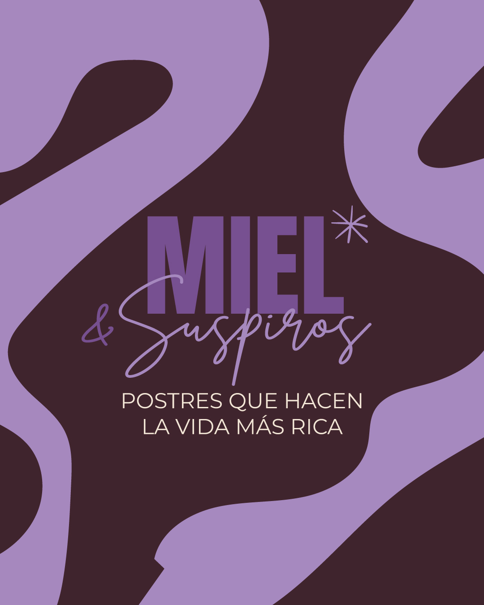
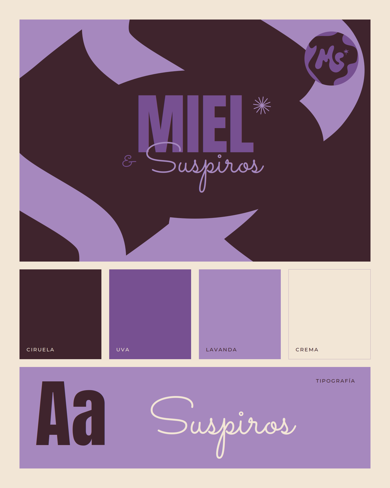
Un monograma con
forma de antojo.
El isotipo une la M y la S en letras suaves y redondeadas, como algo que se derrite. El asterisco funciona como un destello de dulzura. El logotipo combina una tipografía condensada con una script para equilibrar fuerza y ternura.
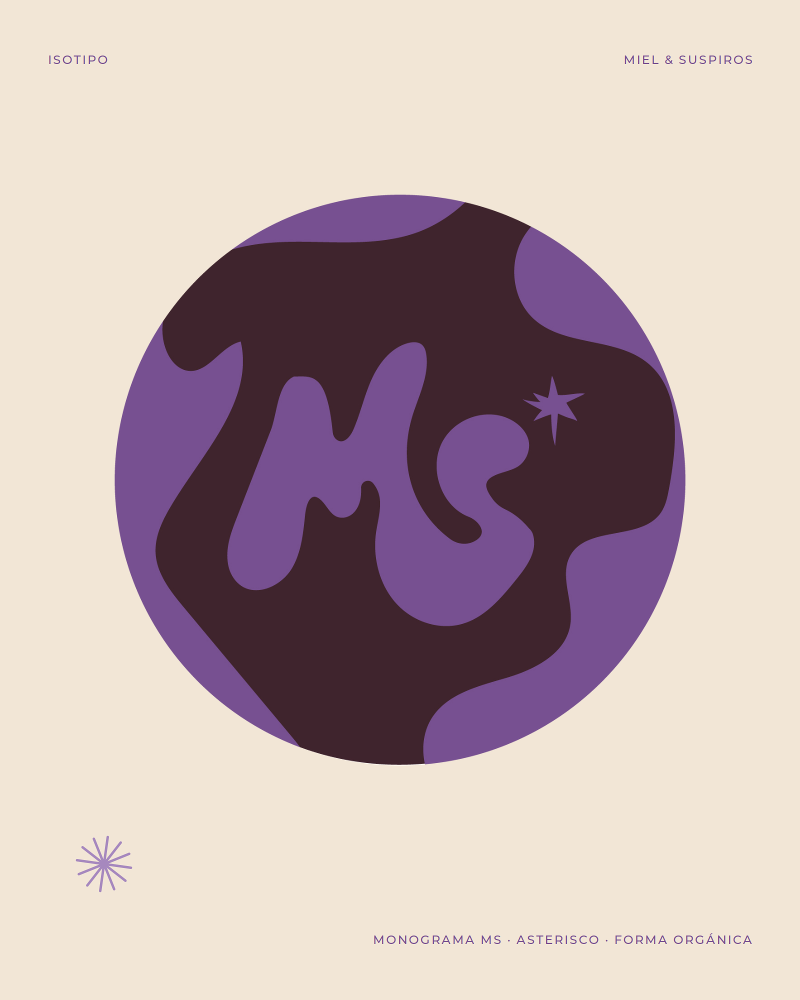
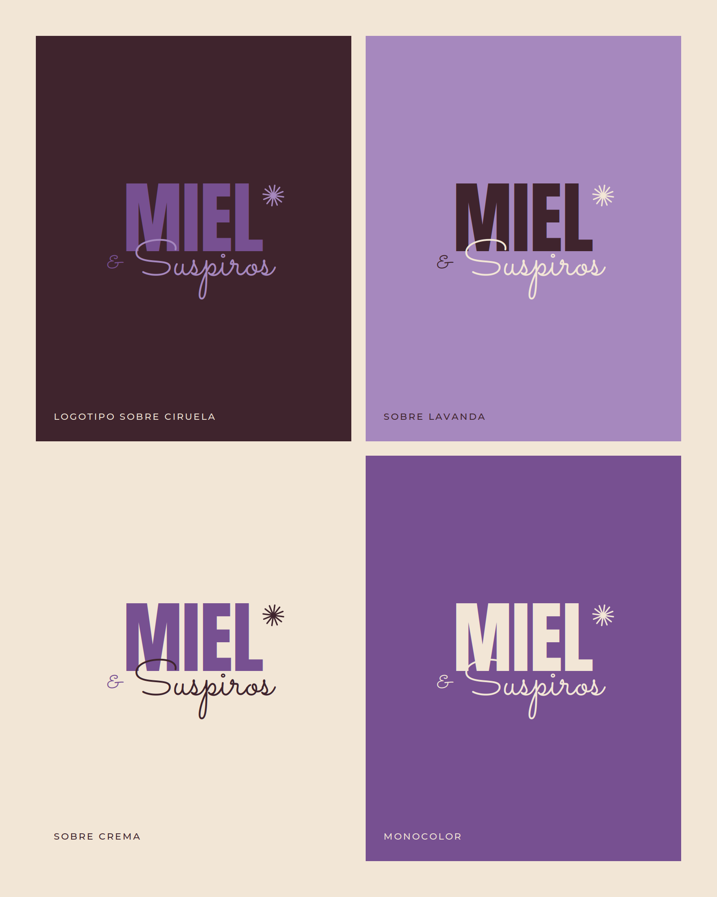
Fuerza y
dulzura.
Una display condensada para los titulares que llaman la atención, una script para los acentos que hacen sonreír y una sans serif limpia para los mensajes.
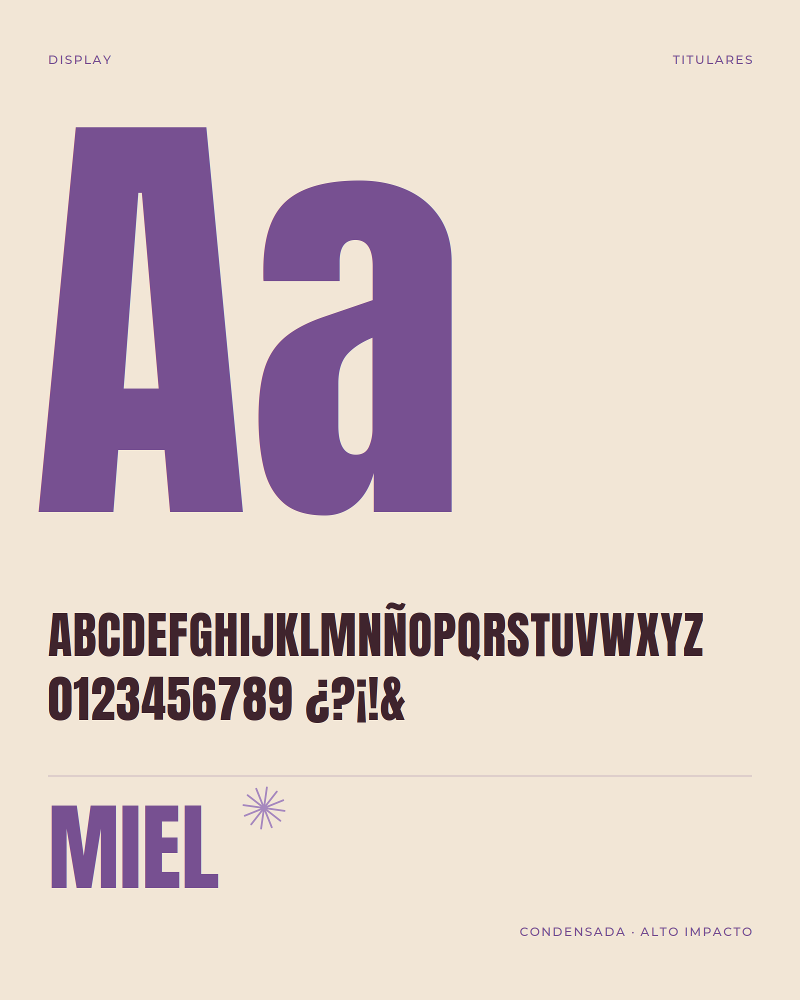
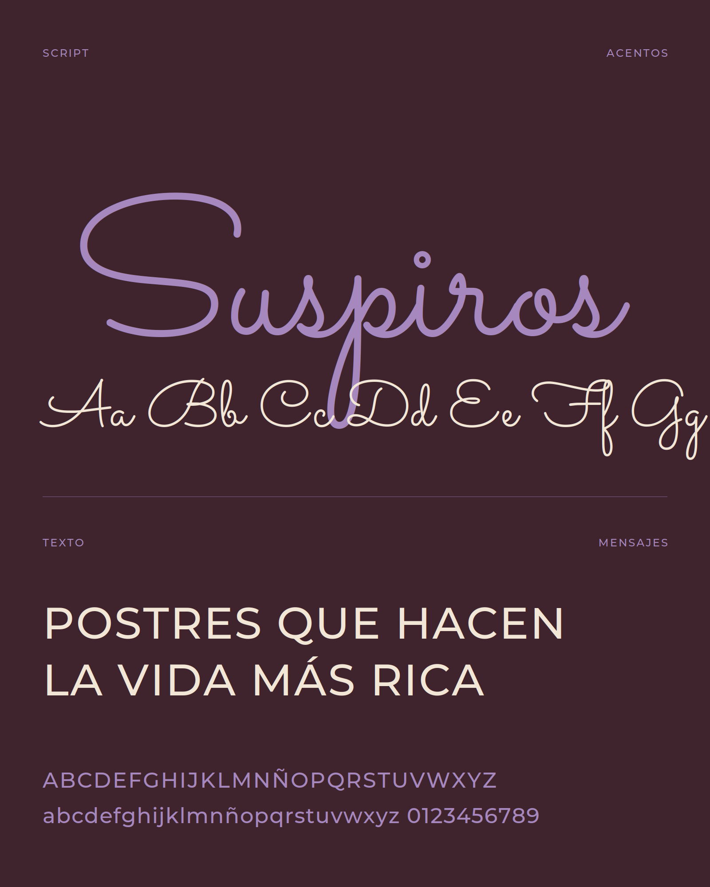
Una paleta para
consentir.
El ciruela aporta profundidad, como el chocolate. El uva y el lavanda le dan un toque dulce y diferente. El crema equilibra todo con calidez.
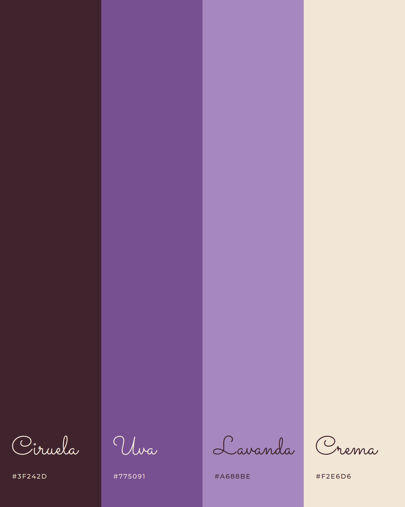
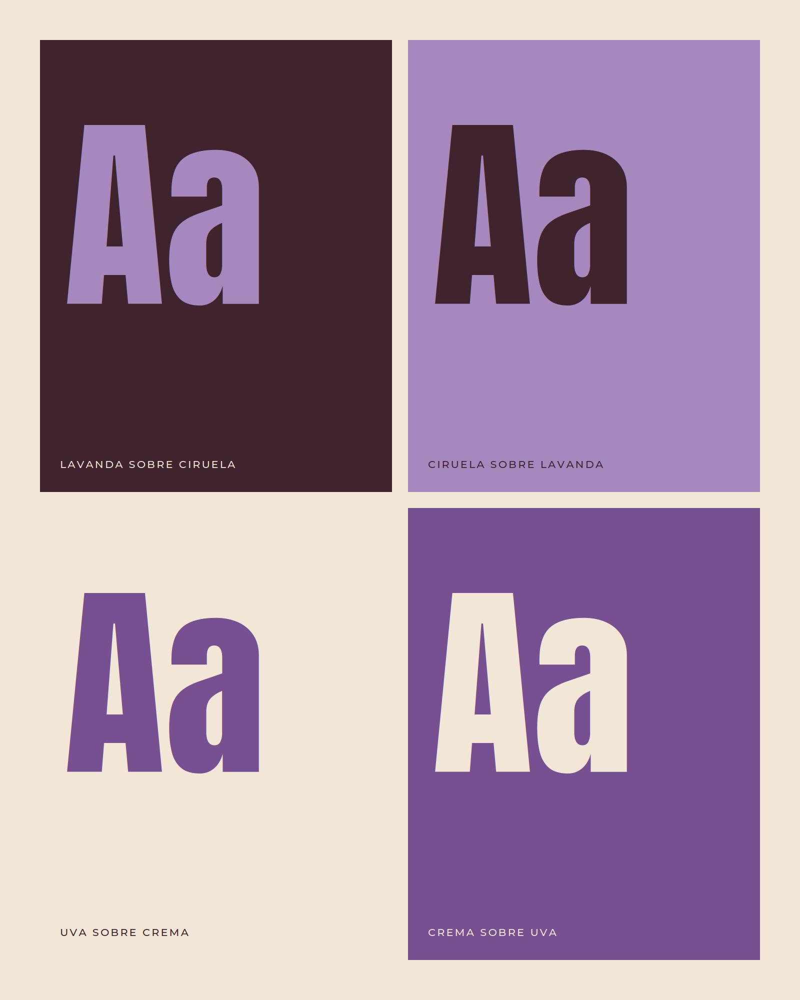
Formas que se
derriten.
Las formas orgánicas recuerdan la miel y el chocolate cuando caen. Junto al asterisco y el ampersand, crean un sistema flexible que se adapta a empaques, redes y piezas impresas.
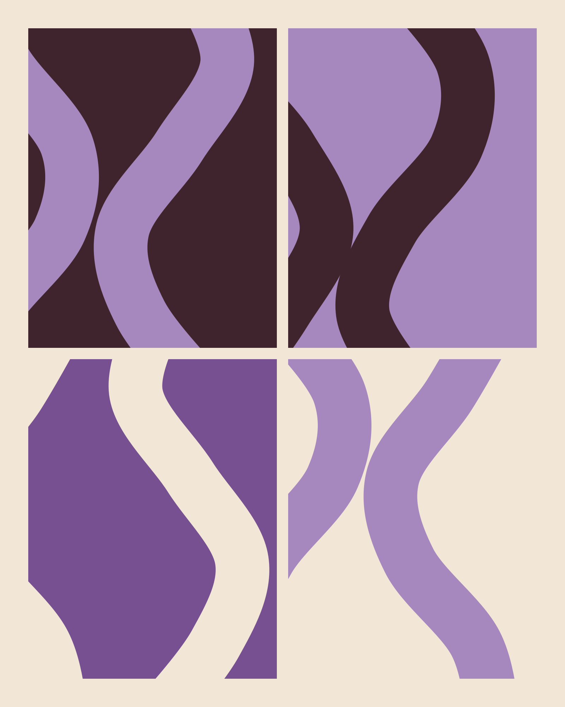
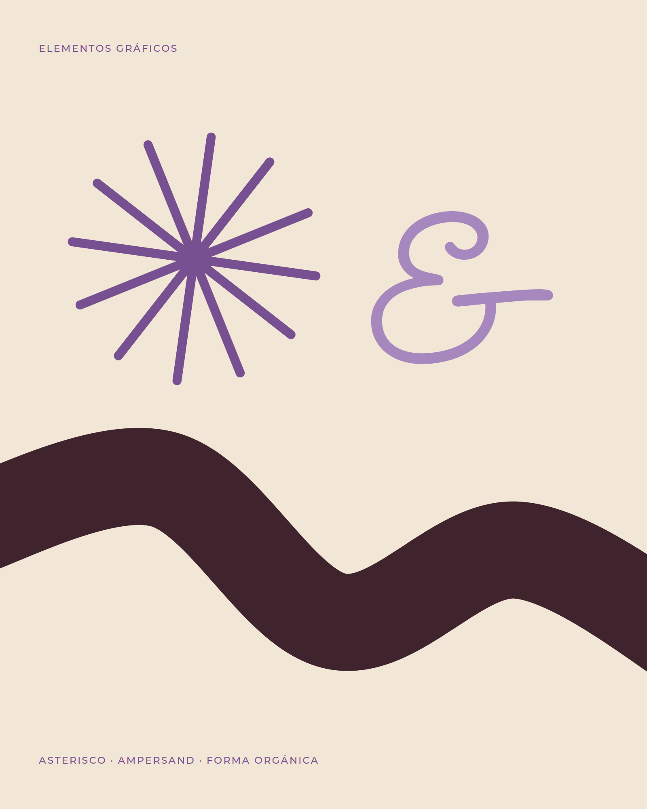
La marca
en la mesa.
Aplicaciones de la identidad en cajas de postres, stickers y publicaciones para redes sociales.
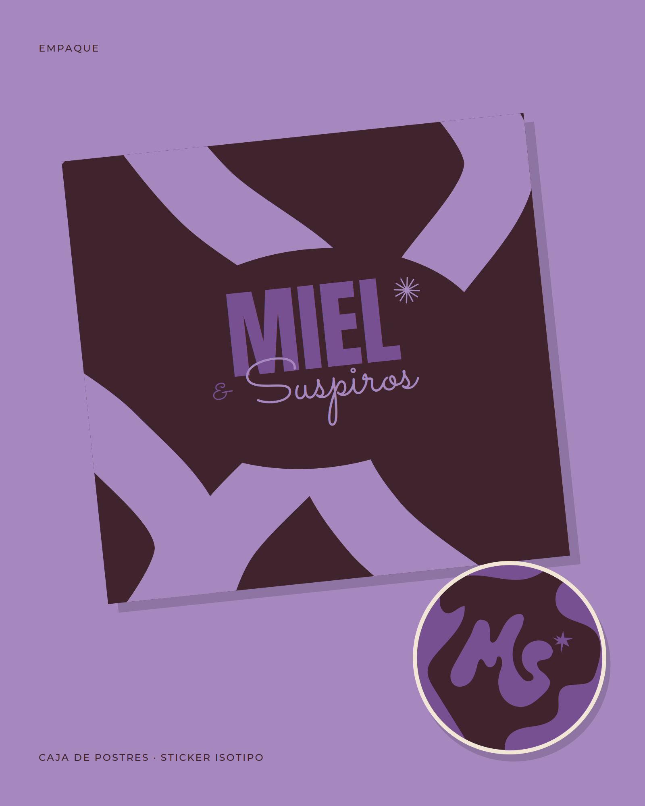
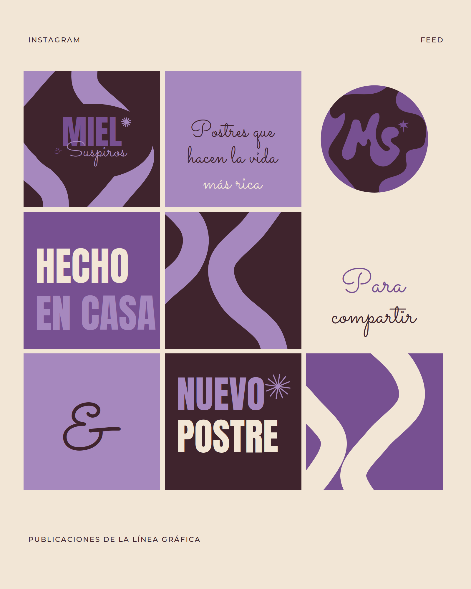
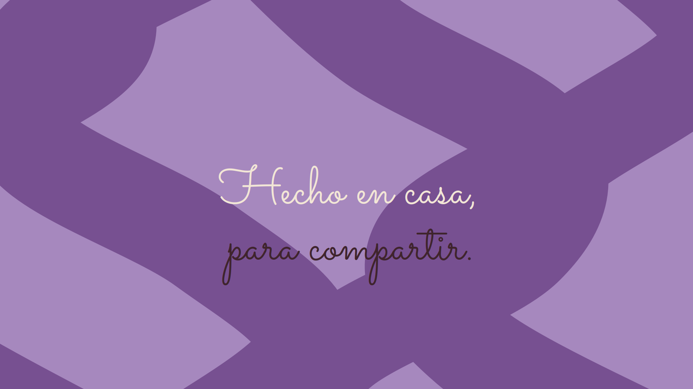